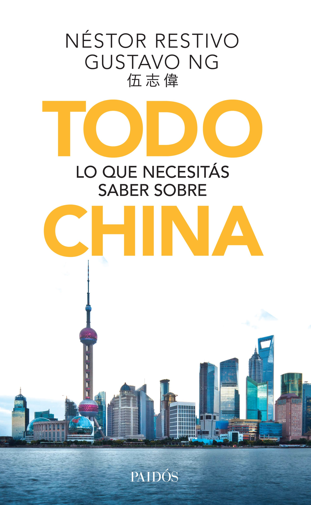

Todo sobre China

El abordaje que hacemos sobre China es una mirada para nada abstracta, distinta y muy distante de la que podría haber hecho un marroquí, un canadiense o un japonés; o, en particular,un chino. Formados en humanidades y periodismo, por años hemos aprendido de China con una cantidad de expertos argentinos que desde la academia, la función pública y los negocios vienen haciendo un trabajo notable en cuanto a estudiar y vincularse con ese país, hasta hace unos años de manera silenciosa y en la actualidad, dada la envergadura que alcanzó la relación bilateral, con mayor visibilidad.